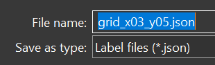
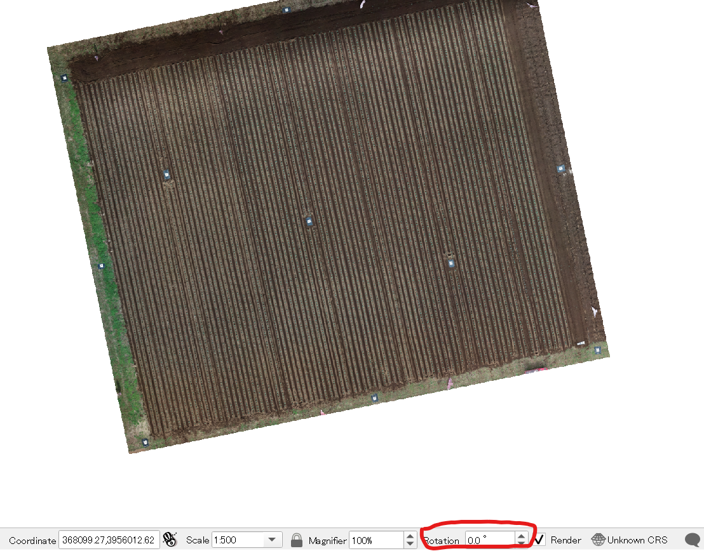

The Agisoft Metashape is used and recommended for processing data (Pix4D has no batch scripts for plot reconstruction, need to process all flights manually, but also supported for later root detection and head segmentation).
There are two different folder involved in this protocol:
1.
folder for UAV data & data processing,
00_rgb_zip -> all the zipped uav images00_rgb_raw -> unzipped uav images01_metashape_projects -> metashape project and results*.psx & *.files -> metashape project filesoutputs -> DOM DSM maps and Point cloudsbbox.pkl -> plot bounding box files made by our scripts (will be created automatically later)02_GIS -> GIS filesgcs.csv -> ground control points measured by RTK devices, it also need to make the following coded panel first 16bit coded target
16bit coded target 
10_root_position -> tempoary results for broccoli bud detection by yolo v511_head_segmentation -> temporay results for broccoli head segmentation by BiSeNet and active learning2.
folder for scripts to analyze previous data
code download here: https://github.com/oceam/UAVbroccoli
01_slice, 02_raw_clip are previous version for Pix4D project (2019-2021 summer data) only for inner tests, the files were arranged in a mess, hard to use and will not be maintained anymore (but contains draft of deviation), please ignore it.10_agisoft_batch_tools, 11_root_pos, and 12_head_seg, are complete protocol scripts for Agisoft metashape (2021 autumn data)Please also download the following open source free software for later usage
2.
Labelme for labeling images for deep learning training
3.
Miniconda for running the scripts
Create the environment named
uavbroccoli(or any other name you like) by the following code (tested on Pytorch=1.8.2, CUDA=11.1)# cd to UAVbroccoli Github project
cd path/to/github/UAVbroccoli
conda env create -n uavbroccoli -f conda_requirements.yml
or you can create by the following steps:
# create environment (only use conda for environment management)
conda env create -n uavbroccoli python==3.8
# install pytorch (by pip)
pip3 install torch==1.8.2+cu111 torchvision==0.9.2+cu111 torchaudio===0.8.2 -f https://download.pytorch.org/whl/lts/1.8/torch_lts.html
# install yolov5 dependcies
pip install -r yolov5/requirements.txt
# install EasyIDP dependices
pip install -r EasyIDP/requirements.txt
# install other packages
pip install imagecodecs scikit-learn
Test whether pytorch is successfully installed:
(uavbroccoli) path/to/github/UAVbroccoli>python
>>> import torch
>>> torch.zeros([1]).cuda()
tensor([0.], device='cuda:0')
>>> torch.version.cuda
'11.1'
>>> torch.backends.cudnn.version()
8005
Step 1: Test project
1.1 test auto load image scripts
1.
open metashape software
2.
run
10_agisoft_batch_tools/00_create_tested_project.py in metashape, it auto adds metashape flights as chunk (need check file path in codes when deal with new data, and)3.
use detect markers, find which marker type in the image (12bit or 16bit?)
1.2 Link GCP & markers
1.
edit
02_GIS/gcp.xls, make it to following type as save as csv 02_GIS/gcp.csv, the order is important| id | longitude | latitude | altitude |
|---|---|---|---|
| ... | ... | ... | ... |
2.
in metashape, align a tested flight, import
02_GIS/gcp.csv as reference3.
check the imported reference id with target detected id, and modify
for example, in this case:
02_GIS/gcp.csv id column to fit to target detected idfor example, in this case:
001->rm; 002->34; 003->5; 004->1; 005->36; 006->33; 007->41; 008-> 35; 009->4; 010->40; 011->2; 012->3
single number (left) is imported RTK, target x (right) is Agisoft detected
Change RTK GPS data (left) to Agisoft usable references (right)
4.
Then the tested project can be removed.
Step 2: Make GIS products
need to extend more details
2.1 Auto load flight images
1.
open metashape software
2.
run
remember to delete the default
10_agisoft_batch_tools/01_add_images_to_projects.py(edit first), this combines import image, detect marker, load marker reference GSP info togetherremember to delete the default
chunk 1 as save project2.2 Manual check status
1.
auto check images, disable some incorrect image (e.g. during flight, multi-spectral board image), and edit
reference -> settings -> miscellaneous/caputer distance(m) to flight height
2.3 Change plot boundary
1.
in matashape, batch_processing tool, load
10_agisoft_batch_tools/02_align_photos_all_chunk.xml, run align all chunks (flights)2.
in the first chunk, manual edit bounding box to a proper size (covers the main field and ground control points)
3.
edit
10_agisoft_batch_tools/03_change_bbox.py, especially the pkl_path and line23-24, make sure is the chunk you edited:pkl_path = r"E:\2022_tanashi_broccoli\01_metashape_projects\bbox.pkl"
if os.path.exists(pkl_path):
...
else:
# read chunk 211101
chunk = doc.chunks[2] # here is the 3rd chunk, need to change to 0 if necessary
if chunk.label == "20211101_0":
...
4.
run
10_agisoft_batch_tools/03_change_bbox.py in metashape, it will change all chunks' bbox to the first chunk2.4 Batch run all flights
1.
in metashape batch_tool, load
10_agisoft_batch_tools/04_batch_full_outputs.xml, this will run all the point cloud, orthomasic, dsm, and export to given folder (please edit the xml file before run, or edit directly in the metashape)<job name="ExportDem" target="unprocessed">
<image_format>2</image_format>
<path>{projectfolder}/outputs/broccoli_tanashi_5_{chunklabel}_dsm.tif</path>
Step 3: Yolo v5 detect broccoli seedlings
This setups have already been packed into python batch scripts:
.11_root_pos
├── 01_slice_dom.py
├── 02_prepare_yolo_data.py
├── 03_train_yolov5.py
├── 04_apply_yolov5.py
├── 05_yolo2shp.py
├── 06_order_by_ridge.py
└── config.py
The
config.py contains almost all the parameters used in the following procedures, only need to modify here, you don't need to edit all of them at the beginning, you can edit this steps by steps with the following protocols.Very first, please specify the two folders mentioned above:
###########
# 00 init #
###########
easyidp_package_path = "path/to/github/UAVbroccoli/EasyIDP"
project_data_folder = "path/to/your/broccoli_data_folder"
working_spacename = "11_root_position"
3.1 Split DOM to small parts
please specify the following paramters in
config.py################
# 01 slice dom #
################
dom_path_for_detection = f"{project_data_folder}/01_metashape_projects/outputs/broccoli_tanashi_5_20211101_0_dom.tif"
dom_slice_save_folder = f"{project_data_folder}/{working_spacename}"
dom_slice_save_format = "jpg"
dom_slice_length = 1300 # must be a square
dom_slice_buffer = 200
dom_path_for_detection: the DOM with broccoli buds, better with clear weather (as few variation as light as possible), recommended using status like the following images:

dom_slice_save_folder: the folder to save clipped dom regionsdom_slice_save_format: jpg, png, or tif (with geo info, not necessary for this detection)dom_slice_length: the size of each small regions, unit is pixeldom_slice_buffer: the length of buffered regions, unit is pixel
The green part is the buffer region to avoid imcompete broccoli on edge, 200 pixel extend to right and bottom
Then you can run the script by:
# please cd to the folder 11_root_pos first
path/to/github/UAVbroccoli/11_root_pos> conda activate uavbroccoli
(uavbroccoli)path/to/github/UAVbroccoli/11_root_pos> python 01_slice_dom.py
grid_x15_y13.jpg | 100.0 % done | 19 s passed, 0 s left
Cost 19 s in total
Will get the following results:
11_root_position
└── jpg
├── broccoli_tanashi_5_20211101_0_dom.tif
│ ├── grid_x00_y02.jpg
│ ├── grid_x00_y03.jpg
│ ├── ...
│ └── grid_x14_y11.jpg
└── broccoli_tanashi_5_20211101_0_dom.tif.json
3.2 Prepare yolo data
First, run
labelme.exe to annotate training data for yolov5.Remember to unclick the "save with image data", otherwise it will make a huge training data json file
Then, Open Dir (Ctrl +U), choose the previous
jpg/broccoli_tanashi_5_20211101_0_dom.tif folderSelect 1-2 representative images at file list, then
Edit -> create RectangeDraw one rectange, and name the label name

Repeat previous step to mark all buds, and alwasy use the previous label name (don't change to bud1, bud2, etc.)
The incomplete bud at edge also need to be labeled
Then save as, choose a proper folder to save json file (don't rename json file, just leave as default)


Repeat previous steps, label 2-3 representative images

Then run edit the config.py, to specify the labeled folder:
############################
# 02 prepare yolo database #
############################
labelme_json_data_pool = {
# data_id: folder contains labelme json
"2021a":f"{project_data_folder}/{working_spacename}/labelme_json", # 2021 autumn train data
# also acceptable for several different folders as total training data pool
"2021s":"Z:/hwang_Pro/data/2021_tanashi_broccoli/11_instance_seg/yolo_json", # 2021 summer train data
"2020":"Z:/hwang_Pro/data/2020_tanashi_broccoli/11_instance_seg/yolo_json", # 2020 train data
"2019":"Z:/hwang_Pro/data/2019_tanashi_broccoli5/11_instance_seg/yolo_json", #2019 train data
}
train_database_path = f"{project_data_folder}/{working_spacename}/yolo_train/training_database"
# optional
train_database_name = "broccoli_root"
labelme_json_data_pool: you can add all your training data folder of different year, please use python dictionary:{"key1": "path1", "key2": "path2"}
train_database_path: the folder to please organized training data, recommend to leave it as defaulttrain_database_name: recommended leave it as default, or any other name you like# please cd to the folder 11_root_pos first
(uavbroccoli)path/to/github/UAVbroccoli/11_root_pos> python 02_prepare_yolo_data.py
Training database successfully prepared
Will get the following data structure:
11_root_position/yolo_train
├── training_database
│ ├── images
│ │ ├── train
│ │ │ ├── 2019_grid_x2_y07.jpg
│ │ │ ├── ...
│ │ │ ├── 2021s_grid_x1_y03.jpg
│ │ │ └── 2021s_grid_x3_y05.jpg
│ │ └── validation
│ │ ├── 2019_grid_x2_y07.jpg
│ │ ├── ...
│ │ ├── 2021s_grid_x1_y03.jpg
│ │ └── 2021s_grid_x3_y05.jpg
│ └── labels
│ ├── train
│ │ ├── 2019_grid_x2_y07.txt
│ │ ├── ...
│ │ ├── 2021s_grid_x1_y03.txt
│ │ └── 2021s_grid_x3_y05.txt
│ └── validation
│ ├── 2019_grid_x2_y07.txt
│ ├── ...
│ ├── 2021s_grid_x1_y03.txt
│ └── 2021s_grid_x3_y05.txt
└── training_database.yaml
3.3 Train yolov5 models
Please change the following in
config.py#######################
# 03 train yolo model #
#######################
yolo_model_image_size = 1500 # optional
yolo_model_batch_size = 8
yolo_model_epochs = 300
yolo_model_structure_config = "../yolov5/models/yolov5s.yaml"
yolo_model_name = "br"
yolo_model_save_path = f"{project_data_folder}/{working_spacename}/yolo_train/runs"
yolo_model_image_size: the resize size of model for different input imagesyolo_model_batch_size: change at your need, default 8 should workyolo_model_epochs: smaller will faster, but too small may result in an incomplete model trainingyolo_model_structure_config: in our case, the training data is too small, only small model (yolo v5 small) can be trained. Here uses relative path to yolov5 folder, please do not changeyolo_model_name: change at your need, default broccoli_root -> bryolo_model_save_path: place to save trained model, recommend to leave it as default# please cd to the folder 11_root_pos first
(uavbroccoli)path/to/github/UAVbroccoli/11_root_pos> python 03_train_yolov5.py
>>>python ../yolov5/train.py --img 1500 --batch 8 --epochs 300 --data E:/2022_tanashi_broccoli/11_root_position/yolo_train/training_database.yaml --cfg ../yolov5/models/yolov5s.yaml --name br --project E:/2022_tanashi_broccoli/11_root_position/yolo_train/runs --workers 0
train: weights=..\yolov5\yolov5s.pt, cfg=../yolov5/models/yolov5s.yaml, data=E:/2022_tanashi_broccoli/11_root_position/yolo_train/training_database.yaml, hyp=..\yolov5\data\hyps\hyp.scratch.yaml, epochs=300, batch_size=8, imgsz=1500, rect=False, resume=False, nosave=False, noval=False, noautoanchor=False, evolve=None, bucket=, cache=None, image_weights=False, device=, multi_scale=False, single_cls=False, optimizer=SGD, sync_bn=False, workers=0, project=E:/2022_tanashi_broccoli/11_root_position/yolo_train/runs, name=br, exist_ok=False, quad=False, linear_lr=False, label_smoothing=0.0, patience=100, freeze=[0], save_period=-1, local_rank=-1, entity=None, upload_dataset=False, bbox_interval=-1, artifact_alias=latest
github: skipping check (not a git repository), for updates see https://github.com/ultralytics/yolov5
YOLOv5 2022-1-20 torch 1.8.2+cu111 CUDA:0 (NVIDIA GeForce RTX 3090, 24576MiB)
hyperparameters: lr0=0.01, lrf=0.1, momentum=0.937, weight_decay=0.0005, warmup_epochs=3.0, warmup_momentum=0.8, warmup_bias_lr=0.1, box=0.05, cls=0.5, cls_pw=1.0, obj=1.0, obj_pw=1.0, iou_t=0.2, anchor_t=4.0, fl_gamma=0.0, hsv_h=0.015, hsv_s=0.7, hsv_v=0.4, degrees=0.0, translate=0.1, scale=0.5, shear=0.0, perspective=0.0, flipud=0.0, fliplr=0.5, mosaic=1.0, mixup=0.0, copy_paste=0.0
Weights & Biases: run 'pip install wandb' to automatically track and visualize YOLOv5 runs (RECOMMENDED)
TensorBoard: Start with 'tensorboard --logdir E:\2022_tanashi_broccoli\11_root_position\yolo_train\runs', view at http://localhost:6006/
Overriding model.yaml nc=80 with nc=1
from n params module arguments
0 -1 1 3520 models.common.Conv [3, 32, 6, 2, 2]
...
24 [17, 20, 23] 1 16182 models.yolo.Detect [1, [[10, 13, 16, 30, 33, 23], [30, 61, 62, 45, 59, 119], [116, 90, 156, 198, 373, 326]], [128, 256, 512]]
Model Summary: 270 layers, 7022326 parameters, 7022326 gradients, 15.8 GFLOPs
Transferred 342/349 items from ..\yolov5\yolov5s.pt
WARNING: --img-size 1500 must be multiple of max stride 32, updating to 1504
Scaled weight_decay = 0.0005
optimizer: SGD with parameter groups 57 weight (no decay), 60 weight, 60 bias
train: Scanning 'E:\2022_tanashi_broccoli\11_root_position\yolo_train\training_database\labels\train' images and labels
train: New cache created: E:\2022_tanashi_broccoli\11_root_position\yolo_train\training_database\labels\train.cache
val: Scanning 'E:\2022_tanashi_broccoli\11_root_position\yolo_train\training_database\labels\validation' images and lab
val: New cache created: E:\2022_tanashi_broccoli\11_root_position\yolo_train\training_database\labels\validation.cache
module 'signal' has no attribute 'SIGALRM'
AutoAnchor: 6.28 anchors/target, 1.000 Best Possible Recall (BPR). Current anchors are a good fit to dataset
Image sizes 1504 train, 1504 val
Using 0 dataloader workers
Logging results to E:\2022_tanashi_broccoli\11_root_position\yolo_train\runs\br
Starting training for 300 epochs...
Epoch gpu_mem box obj cls labels img_size
0/299 7.28G 0.1192 0.81 0 983 1504: 100%|██████████| 1/1 [00:03<00:00, 3.57s/it]
Class Images Labels P R mAP@.5 mAP@.5:.95: 100%|██████████| 1/1 [00:00<00:
all 7 728 0.00236 0.00412 0.000722 0.000217
...
Epoch gpu_mem box obj cls labels img_size
299/299 7.97G 0.04732 0.4038 0 769 1504: 100%|██████████| 1/1 [00:01<00:00, 1.28s/it]
Class Images Labels P R mAP@.5 mAP@.5:.95: 100%|██████████| 1/1 [00:00<00:
all 7 728 0.889 0.849 0.939 0.552
300 epochs completed in 0.183 hours.
Optimizer stripped from E:\2022_tanashi_broccoli\11_root_position\yolo_train\runs\br\weights\last.pt, 15.4MB
Optimizer stripped from E:\2022_tanashi_broccoli\11_root_position\yolo_train\runs\br\weights\best.pt, 15.4MB
Validating E:\2022_tanashi_broccoli\11_root_position\yolo_train\runs\br\weights\best.pt...
Fusing layers...
Model Summary: 213 layers, 7012822 parameters, 0 gradients, 15.8 GFLOPs
Class Images Labels P R mAP@.5 mAP@.5:.95: 100%|██████████| 1/1 [00:00<00:
all 7 728 0.883 0.859 0.939 0.554
Results saved to E:\2022_tanashi_broccoli\11_root_position\yolo_train\runs\br
Please keep mind the last line:
Results saved to ...\11_root_position\yolo_train\runs\brGo to that folder, and check the
results.png, especially the last column Bad training with epoch=100, low Recall and mAP
Bad training with epoch=100, low Recall and mAP  Good training with epoch=300, high Recall and medium mAP
Good training with epoch=300, high Recall and medium mAP You need to change previous setting and retrain until get recall > 0.7 and mAP > 0.5, and record the final path of models:
Results saved to ...\11_root_position\yolo_train\runs\br_x3.4 Apply trained models
Then change the following parameters in
config.py#######################
# 04 apply yolo model #
#######################
yolo_apply_results_folder = f"{project_data_folder}/{working_spacename}/yolo_results"
# please check carefully of model ouptuts, need change every time when run scripts!
yolo_apply_weights_path = f"{yolo_model_save_path}/br/weights/best.pt"
yolo_apply_confidence_threshold = 0.3 # please edit this according to your results
yolo_apply_iou_threshold = 0
yolo_apply_results_folder: the path to save final detected results, recommend to just leave as defaultyolo_apply_weights_path: the model path want to use, please check this carefully, because train different models will get different folders, br, br1, br2, ... ensure you picked the correct one.yolo_apply_confidence_threshold: the threshold to remove low condicence results, you can edit it according to your own results. thres_value, don't too worry about the wrong detect of weed outside plot
yolo_apply_iou_threshold: leave it default as 0 unless you have good understanding about this parameter --iou-thres in yolov5# please cd to the folder 11_root_pos first
(uavbroccoli)path/to/github/UAVbroccoli/11_root_pos> >python 04_apply_yolov5.py
>>>python ../yolov5/detect.py --source E:/2022_tanashi_broccoli/11_root_position\jpg\broccoli_tanashi_5_20211101_0_dom.tif --weights E:/2022_tanashi_broccoli/11_root_position/yolo_train/runs/br/weights/best.pt --imgsz 1500 --conf-thres 0.3 --iou-thres 0 --save-txt --save-conf --project E:/2022_tanashi_broccoli/11_root_position/yolo_results
detect: weights=['E:/2022_tanashi_broccoli/11_root_position/yolo_train/runs/br/weights/best.pt'], source=E:/2022_tanashi_broccoli/11_root_position\jpg\broccoli_tanashi_5_20211101_0_dom.tif, data=..\yolov5\data\coco128.yaml, imgsz=[1500, 1500], conf_thres=0.3, iou_thres=0.0, max_det=1000, device=, view_img=False, save_txt=True, save_conf=True, save_crop=False, nosave=False, classes=None, agnostic_nms=False, augment=False, visualize=False, update=False, project=E:/2022_tanashi_broccoli/11_root_position/yolo_results, name=exp, exist_ok=False, line_thickness=3, hide_labels=False, hide_conf=False, half=False, dnn=False
YOLOv5 2022-1-20 torch 1.8.2+cu111 CUDA:0 (NVIDIA GeForce RTX 3090, 24576MiB)
Fusing layers...
Model Summary: 213 layers, 7012822 parameters, 0 gradients, 15.8 GFLOPs
WARNING: --img-size [1500, 1500] must be multiple of max stride 32, updating to [1504, 1504]
image 1/172 E:\2022_tanashi_broccoli\11_root_position\jpg\broccoli_tanashi_5_20211101_0_dom.tif\grid_x00_y02.jpg: 1504x1504 Done. (0.012s)
...
image 172/172 E:\2022_tanashi_broccoli\11_root_position\jpg\broccoli_tanashi_5_20211101_0_dom.tif\grid_x14_y11.jpg: 1504x1504 Done. (0.011s)
Speed: 1.2ms pre-process, 12.3ms inference, 1.3ms NMS per image at shape (1, 3, 1504, 1504)
Results saved to E:\2022_tanashi_broccoli\11_root_position\yolo_results\exp
156 labels saved to E:\2022_tanashi_broccoli\11_root_position\yolo_results\exp\labels
Will get results like this:
Please manual and randomly check these results, you can add the bad performance ones to training data, and repeat steps 3.2 to 3.4, until almost get a good detection results.
3.5 Change yolo results to shp file
All the yolo results are labels in txt file, editing the following parameters to change them to GIS formats (shapefiles.shp)
########################
# 05 yolo to shapefile #
########################
# please use QGIS to make a rectange bounding box of fields (very tight to crops)
field_rectange_bounding_box_shapefile = f"{project_data_folder}/02_GIS/plot_edge_for_yolo.shp"
# please check carefully about this:
yolo_apply_label_folder = f"{yolo_apply_results_folder}/exp/labels"
shapefile_save_folder = f"{project_data_folder}/{working_spacename}/shapefiles"
field_rectange_bounding_box_shapefile: this is the tight bounding of fields, it will be used to remove wrong weed detection outside plot, and will also guied the ridge direction for later useThe operation of QGIS to make this file will be introduced later
yolo_apply_label_folder: the path of labels, but again carefully check the path, it will give exp, exp1, exp2, etc., with you apply model for several times.shapefile_save_folder: the path to save output shapefiles, recommend to just leave it as default1) How to make previous bounding rectanges in QGIS
1.
Open QGIS and drag DOM into the GUI first

2.
Edit the rotation to place the field ridge vertical

mouse middle press & hold to drag map, middel scrool to zoom in and out
3.
Activate the following toolvars (
view -> toolbars)Advanced Digitizing Toolbar
Digitizing Toolbar
Shape Digitizing Toolbar

Then your panel will look like this:
4.
create new shapefile

1 click the
... to browse the place to save shp file2 change geometry type to polygon
3 Edit the geometry CRS to proper CRS (at least the same with imported DOM)
click ok button to create
5.
add a rectange
select created layer, activate the toggle editing tool
select the add rectangle from 3 points tool
Add the rectange like this:
left click to add points, right click to end points
Then click save, and turn off toggle model, and switch to hand tool
6.
edit bounding box display properties
right click to get into properties panel

choose a symbology, and apply -> ok

2) Run scripts
# please cd to the folder 11_root_pos first
(uavbroccoli)path/to/github/UAVbroccoli/11_root_pos> python 05_yolo2shp.py
[io][shp][fields] Shp fields: {'id': 0}
[io][shp][proj] find ESRI projection file E:/2022_tanashi_broccoli/02_GIS/plot_edge_for_yolo.prj, and successfully obtain projection cartesian
Shapefile results saved!
You will get results like this:

The
keep_bbox (green rectange) and remove_bbox (black rectange) is those buffered region duplications, the unordered_center_points is the green dots in the rectange center.
3) Manual check results (optional)
Ideally, once you selected training data properly, the workflow will given you almost 99% correction detection (100 errors of 11000 broccoli in this case). If you are very care about those errors, you need to manual check these results.
Copy "unordered_center_points" (3 files) and rename to "edited_center_points", need drag
.shp into QGIS, and manual inspect the wrong pointsa. make reference grids
You can also make a grid to better distinguish where you have already specified：
select a proper distance
will get the following grid:

Go into edit mode, and use selection tool (Ctrl + A) to select all, and use rotation tool to rotate, and finally selection those outside boundary, delete them

And change the grid layer display, to get the following grid:

This grid is also important for later broccoli head segmentation.
b. edit broccoli center points
PS: some outlier noise points can be removed by the RANSAC method in the end of 3.6, but has risk of removing correct detection results, not very recommende
Also change the point display for better view
You can do the similar operation (select-delete, select-move) and also add missing points by add polygon tool, to fix the error points of broccoli position
Remember to click the save button frequently to save your work!
c. change shortcuts
You can also in settings-> Keyboard Shortcuts


To change those common used tools' shortcut to edit more efficiently.
3.6 Order id by ridge (optional)
After manual editing all parts, if you do not pay too much attention on their id, this step is not necessary at all
 unique but not ordered broccoli id
unique but not ordered broccoli id The following scripts will rename the broccoli id along the ridge:
Edit the following part in
config.py:#####################
# 06 order by ridge #
#####################
edited_center_points_shapefile = f"{shapefile_save_folder}/edited_center_points.shp"
ridge_strength_ratio = 10
ridge_direction = "x" # if wrong direction, change to "y"
ridge_distance_parameters = 3 # please decrease if some ridge is missing
ridge_height_parameters = 20 # please increase if some bottom small ridge detect as ridge
# optional parameters
ridge_buffer = 0.5 # default is the middle line of two ridges
# rg1 rg2
# | [|] | [|]
# |<---[|]--->| [|]
# | [|] 0.5| [|]
# | buffer | [|]
ransac_residual_threshold=35000 # more crops in a ridge, more values
ransac_max_trials=2000
For ridge detection:
edited_center_points_shapefile: previous you renamed and edited shapefileridge_strength_ratio: default 10calculate the x distribution counts by: x = round(points.x / 10) * 10
Higher value, the peaks will higher and more distinguishable
ridge_direction: along x or along y axis
ridge_distance_parameters: the minimum distance of each peak (red cross), higher value will result some peak missingridge_height_parameters: the green threshold to filter local peaks below this lineFor regressing points to ridge line
ridge_buffer: the ridge region to include pointsBy default=0.5, is the middle line between two ridges.
use_ransac = FalseBy default, assume the ridge and points are straight enough, the ridge attribution of each points can be simply divied by the middle line, no need to use RANSAC to regression
The ransac method can be used to remove some outlier noise points in some contents, but are not very recommened to use.
ransac_residual_thresholdA not correctly use but workable solution
wrong, please increase redisudal thresh correct example
ransac_max_trials: higher may make results more stableDon't worry too much about previous parameters, the scripts enables you to interactively adjust these parameters.
# please cd to the folder 11_root_pos first
(uavbroccoli) path/to/github/UAVbroccoli/11_root_pos> python 06_order_by_ridge.py
[io][shp][fields] Shp fields: {'id': 0}
[io][shp][fields] Shp fields: {'name': 0}
[io][shp][name] Plot 11097 loaded | 11098/11098
This will popup the following figure:

After close this figure, the script will ask you the following questions:
(uavbroccoli) path/to/github/UAVbroccoli/11_root_pos>python 06_order_by_ridge.py
[io][shp][fields] Shp fields: {'id': 0}
[io][shp][fields] Shp fields: {'name': 0}
[io][shp][name] Plot 11097 loaded | 11098/11098
Is all the ridges are correct?[Y/N]
>>>
if you want to change other parameters, type N and press Enter
Is all the ridges are correct?[Y/N]
>>> n
Please type parameter NUMBER want adjust:
[1] Strength Ratio = 10
[2] ridge direction = x
[3] distance parameters = 3
[4] height parameters = 20
>>>
Then type number 1-4, to change the parameter:
Please type parameter NUMBER want adjust:
[1] Strength Ratio = 10
[2] ridge direction = x
[3] distance parameters = 3
[4] height parameters = 20
>>> 2
Change to?
>>> y
Then will change to the other ridge direction:

Adjust these parameters until you are satisfied with the ridge detection results, type Y and press Enter, go to next regressing points;
Calculate the ridge attribution of each points
The default ridge middle line could produce perfect results:
But you can also change it to RANSAC regression mode:
Is all the ridges colors are correct? 11098 of 11098 re-labeled, 0 ignored[Y/N]
>>> n
Please type parameter NUMBER want adjust:
[1] Ridge buffer = 0.5
[2] Use RANSAC = False
[3] RANSAC residual threshold = 35
[4] RANSAC max trails = 2000
>>> 2
Change to?
>>> true
Then will get the results of RANSAC regression (but the start points are also splitted by ridge middle line)
obviously, there are some points missing, increase the residual threshold or run it again may give different results
Is all the ridges colors are correct? 7980 of 11098 re-labeled, 3118 ignored[Y/N]
>>> n
Please type parameter NUMBER want adjust:
[1] RANSAC residual threshold = 35
[2] RANSAC max trails = 2000
>>> 1
Change to?
>>> 35000
Is all the ridges colors are correct? 11097 of 11098 re-labeled, 1 ignored[Y/N]
>>>

Still 1 points missing, the RANSAC method is used in previous version and not very recommended here
The final results will be save to
ordered_center_points.shp file, and look like this:Step 4: Segment broccoli head
To be continued